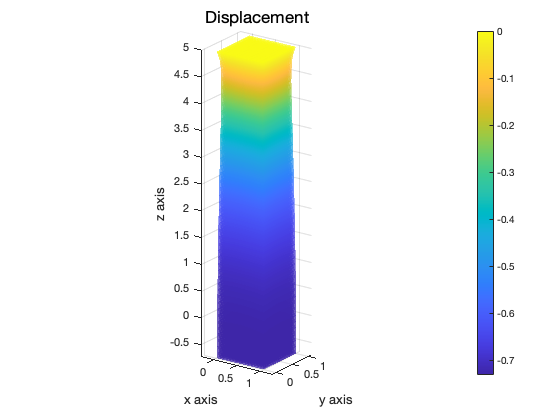

Contents
FEM solution
Contributed by OuYang,Xiong
close all;
clear;
clc;
load mesh model
x : coordinates (3* total nnde) ix : node number matrix (nnde in cell* cell number)
% load('comsol 5w fix.mat') Lx = 1; Ly = 1; Lz = 5; Nx = 16; Ny = 16; Nz = 44; mesher = MyRegular_Mesher; mesher.create(5, [Lx, Ly, Lz], [Nx, Ny, Nz], [0 0 0]); x = mesher.x; nx = mesher.nx; ix = mesher.ix; nix = mesher.nix; nnde = 4; % figure; % plot_mesh(3, x, ix, nnde * ones(nix, 1), 'none', 'k', 1); % axis equal % xlabel('x'); % ylabel('y'); % zlabel('z'); % view(19, 23); % area matrix for i = 1 : length(ix) [fx(((4*i-3):(4*i)),:),~] = VerToFace(x(ix(i,:),:),ix(i,:)); end
define parameters
material parameters young modulus
E = 6000000; % poisson's ratio nu = 0.33; % density rho = 10; % Geometric parameters % length in x,y,z Lz = max(x(:,3)) - min(x(:,3)); Ly = max(x(:,2)) - min(x(:,2)); Lx = max(x(:,1)) - min(x(:,1)); % physical force % gravity g = 9.8; % model parameters % dimensionality D = 3; % number of nodes nnde = 4; % order of numerical integration nint = 3; % all degrees of freedom nf = D* nnde; % model parameter nx = size(x, 1); nix = size(ix, 1); % figure % h1 = mypatch(x, fx, 'r', 'k', [], 0.5, 1 ,'title','x','y','z'); % set(h1, 'linewidth', 0.5);
get generation parameters
SF = GenerateShapeFunction(D,nnde,nint);
% calculate elast tensor
CC = ElastTensor(E,nu);
assemble K M
tic; [K, M] = IntKM(x, ix, SF, CC); toc;
历时 15.240607 秒。
Boundary condition
constrain;
topID = find(abs(x(:,3) - Lz) < 1e-5); lowerID = find(abs(x(:,3) - 0) < 1e-5); figure % h1 = mypatch(x, fx, 'none', 'k', [], 0.5, 1 ,'title','x','y','z'); % hold on; % plot3(x(topID, 1), x(topID, 2), x(topID, 3), 'ob', 'markerfacecolor', 'r'); % plot3(x(lowerID, 1), x(lowerID, 2), x(lowerID, 3), 'ob', 'markerfacecolor', 'r'); % pu2 = [topID * D - 2,topID * D - 1,topID * D]'; pu2 = pu2(:); % disp. fext u = zeros(nx * D, 1); u(pu2) = 0; % fext = zeros(nx, D); fext(:,3) = -rho* g* x(:,3); fext = fext'; fext = fext(:); % solve [u, fext] = solveLin(K, u, fext, pu2); % u0 = reshape(u, D, nx)'; x1 = x + u0; % mypatch(x1, fx, 'interp', 'none', u0(:,3), 0.5, 1,'Displacement','x axis','y axis','z axis');